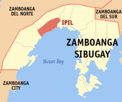
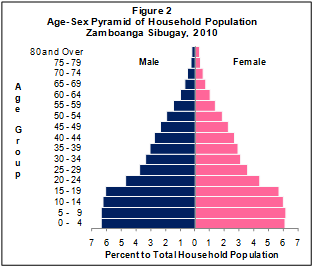
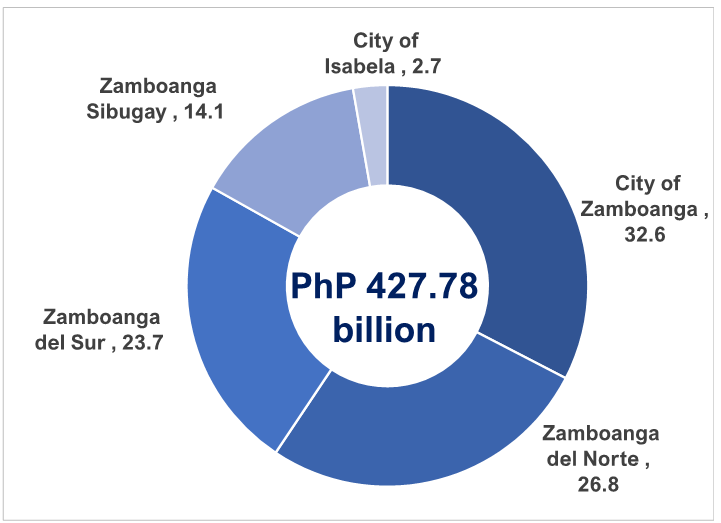
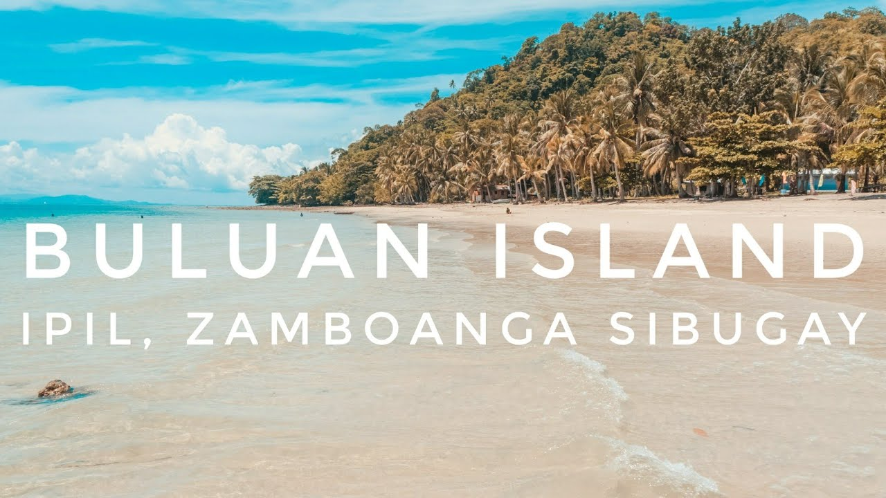
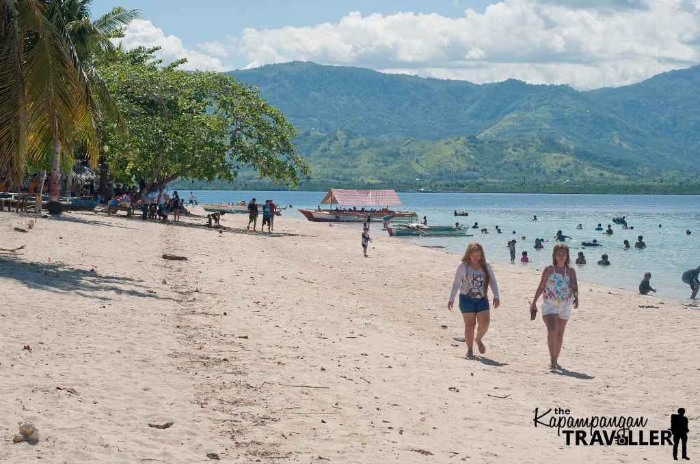

Present. In 2001, Zamboanga Sibugay, was created from the province of Zamboanga del Sur with Ipil as the seat of government with the virtue of Republic Act No. 8973. In the same year, the residents of Basilan opted to join the Autonomous Region in Muslim Mindanao (ARMM) in a plebiscite.
Geography

Geography. Zamboanga Sibugay covers a total area of 3,607.75 square kilometres (1,392.96 sq mi) occupying the south-central section of the Zamboanga Peninsula in western Mindanao, at 7°48'N 122°40'E. To the north it intersects the common municipal boundaries of Kalawit, Tampilisan, and Godod of Zamboanga del Nort
Demographics

Zamboanga Sibugay is a province in the Philippines situated in the Zamboanga Peninsula region occupying the western section of Mindanao. Its capital is the Municipality of Ipil.
The province has a land area of 3,481.28 square kilometers or 1,344.13 square miles. Its population as determined by the 2020 Census was 669,840. This represented 17.28% of the total population of the Zamboanga Peninsula region, 2.55% of the overall population of the Mindanao island group, or 0.61% of the entire population of the Philippines. Based on these figures, the population density is computed at 192 inhabitants per square kilometer or 498 inhabitants per square mile.
Economy

n terms of growth rate, all economies in the region expanded in 2022, with Zamboanga Sibugay recording the fastest growth of 8.6 percent, followed by City of Zamboanga with a growth rate of 8.1 percent. Zamboanga Sibugay and City of Zamboanga recorded growths faster than the region’s economic growth of 7.5 percent. On the other hand, City of Isabela, Zamboanga del Norte, and Zamboanga del Sur posted growth rates of 7.21 percent, 7.17 percent, and 6.5 percent, respectively, which were lower than the region’s economic performance in 2022. (Figure 2)
Tourism and Attractions
TAGBILAT FALLS
BULUAN ISLAND


SCHOOLS & UNIVERSITIES
Tictapul National High Schoo
Timalang Elementary School
Zamboanga Sibugay National High School
Western Mindanao State University - Malangas Campus